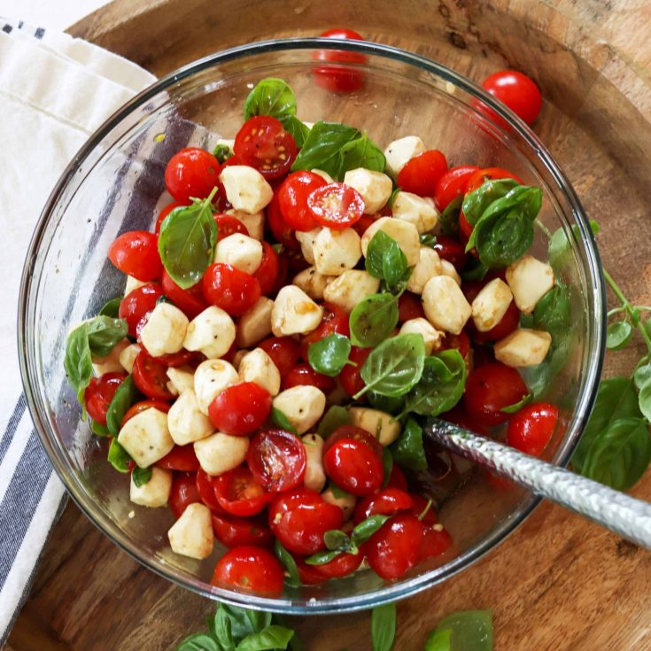

Caprese Salad

Description
A delicious light salad perfect for summer or fall. Red wine vinegar can be substituted for balsamic vinegar if prefered.
Ingredients
- 2 pint cherry tomatos
- 1/2 cup chopped fresh basil
- 16pz mozerella pearls
- 1/2 cup balsamic vinegar
- 1/4 cup olive oil
- 1 tablespoon honey
- 1 or 2 avacado (optional)
Steps
- cut cherry tomatos in half
- dice avacado if using
- add halved tomatos, diced avacado, mozerella pearls and chopped fresh basil to bowl
- in small bowl add vinegar, olive oil and honey
- whisk liquids to combine
- add vinegar mixture to tomato mozerella mixture
- stir gently
- sprinkle with salt and black pepper
- serve immediately or store in fridge for one hour before serving